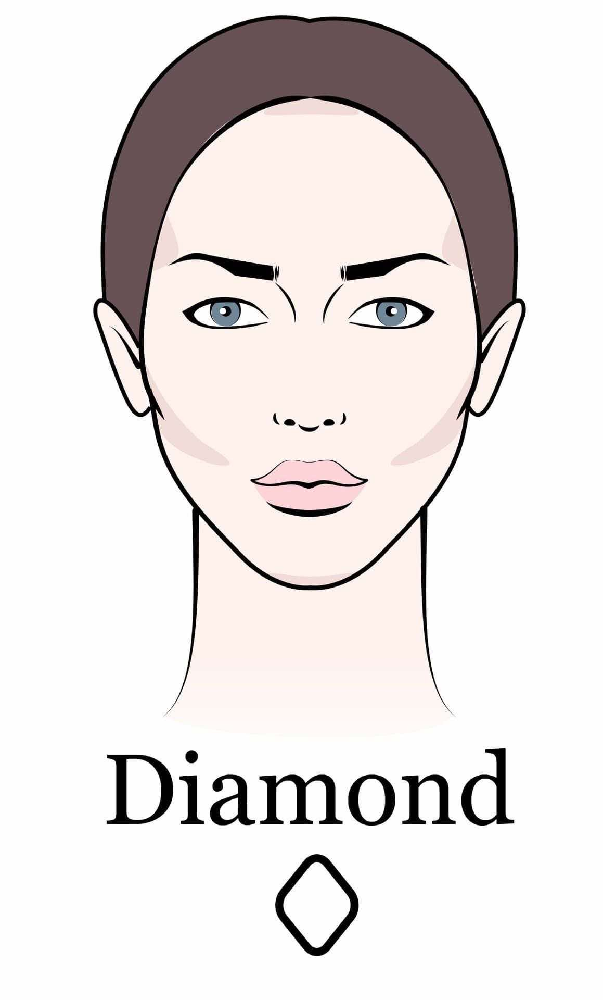
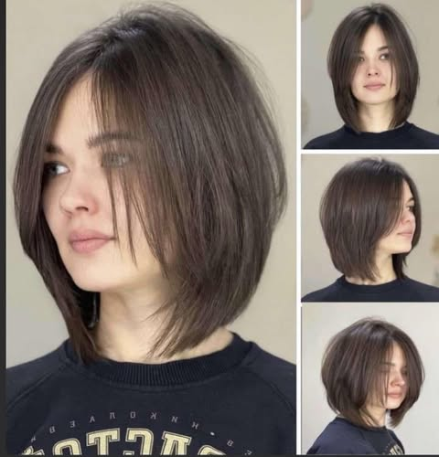
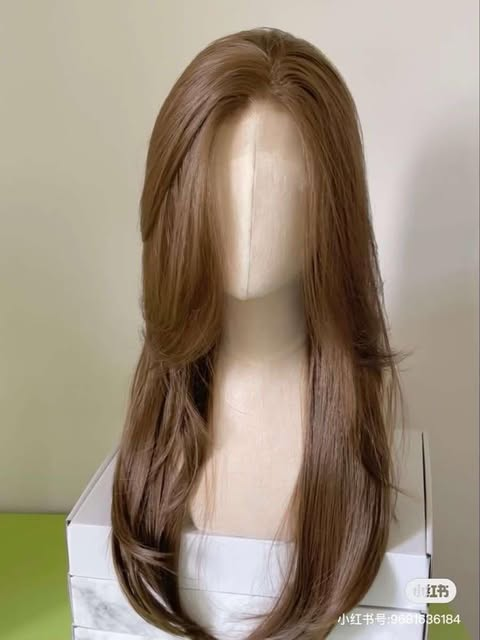
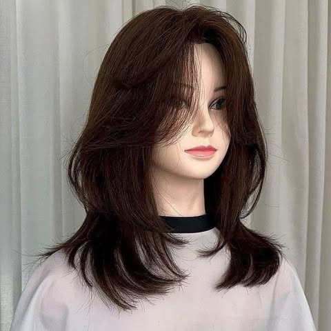

ทรงผม
โครงหน้าแบบเราเหมาะกับผมทรงไหนดี?
รูปเพชร
ทรงผมที่แนะนำ

1)ทรงบ็อบยาวระดับคาง
ทรงนี้เหมาะกับสาวหน้ารูปเพชรที่ต้องการความเก๋และเปรี้ยวจี๊ดด้วยการตัดผมบ๊อบสั้นความยาวระดับคาง ทรงนี้จะช่วยปิดความกว้างของช่วงแก้ม และจะช่วยดึงความสนใจจากหน้าผผากที่แคบ และจะช่วยให้หน้าดูเรียวยาวมากขึ้น

2)ทรง Bowl Cut
เป็นทรงผมสำหรับหนุ่มน่ารัก ที่ตัดตรงๆ คล้ายกะลาครอบ การลอนเพิ่มจะช่วยให้ผมพอง มีวอลลุ่ม และมีเท็กซ์เจอร์น่าสนใจมากขึ้น

3)ทรง Surf Cut
เป็นทรงผมที่ทำให้ดูหนุ่มขึ้นอีกเป็นกอง โดยด้านบนจะไว้ยาวขึ้นอยู่กับความชอบของคุณผู้ชาย ขณะที่ด้านข้างมีการตัดคล้ายกับรองทรงสูง แต่ไล่เฟดให้ดูมีระดับชั้น ตอนเซตผมก็ให้ปัดเสยขึ้นไปด้านหลังทิศทางเดียวกันทั้งหมด เผยความหล่อ เท่

4)ทรง Wolf Cut
เป็นทรงที่นอกจากจะช่วยทำให้ผมดูหนาและมีวอลลุ่มแล้ว แต่งตัวอย่างไรก็ดูเป็นคนเท่อยู่เสมอ

5)ทรงสไลด์กรอบหน้า
ตัดแล้วจะทำให้ผมดูมีเลเยอร์ มีการไล่ระดับในช่วงกรอบหน้า จะช่วยพรางให้ดูหน้าเรียวยาวขึ้น แถมยังเพิ่มวอลลุ่มให้ผมดูมีอะไร ไม่ใช่แค่ตัดตรงธรรมดา สามารถไดร์งุ้ม ม้วนเข้า ม้วนออก จะได้ทรงที่แตกต่างกันไปด้วย
